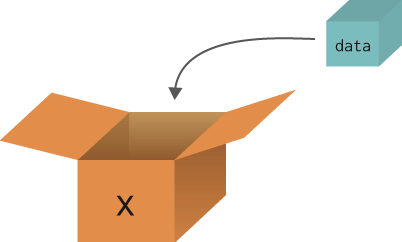
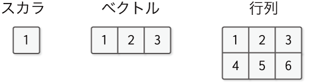

ステップ1 箱としての変数¶
本書の最初のステップでは、DeZeroの構成要素である「変数」を作ります。この変数は、DeZeroにおいて最も重要なパーツとなります。本ステップでは、変数の働きについて考え、その機能を満たすように実装します。
1.1 変数とは¶
早速ですが、変数とは何でしょうか？ プログラミングの入門書などを開くと、変数は、おおよそ図1-1のようなイメージで説明されます。

図1-1 変数の説明例
図1-1のように、箱にデータを入れる絵があり、その箱が変数であるという説明が続きます。この変数を「箱」にたとえた説明は、変数の性質を（ある程度は）上手く表しています。要点をまとめると、
箱とデータは別物である
箱にはデータが入る（= 代入）
箱の中を覗けばデータが分かる（= 参照）
といったことが言えるでしょう。それでは、この「箱」のイメージに合うように、DeZeroの変数を実装してみましょう。
1.2 Variableクラスの実装¶
変数は英語でvariableです。そこで、DeZeroの変数をVariableクラスとして実装することにします。ちなみにPythonでは、クラス名の頭文字を大文字にするのが一般的なコーディング規則です。このことは、PEP8というPythonのコーディング規約で述べられています。
それでは、Variableクラスが「箱」となるように実装してみましょう。その機能を最小限のコードで書くとすれば、次のようになります。
[1]:
class Variable:
def __init__(self, data):
self.data = data
見てのとおり、初期化で与えられた引数をインスタンス変数のdataに設定するだけです。とても単純なコードですが、これでVariableクラスは「箱」として使うことができます。なぜなら、実際のデータはVariableのdataに保持されるからです。これは次の使用例を見ると、より明確になるでしょう。
[2]:
import numpy as np
data = np.array(1.0)
x = Variable(data)
print(x.data)
1.0
この例では、箱に入れるデータとして「NumPyの多次元配列」を用いています。このとき、xはVariableインスタンスであり、実際のデータはxの中にあります。つまり、xはデータではなく、データを持つ存在――データを詰める箱――というわけです。
NOTE
機械学習のシステムは、基礎とするデータ構造に「多次元配列」を使います。そのため、DeZeroのVariableクラスはNumPyの多次元配列だけを扱える仕様にします。なお、NumPyの多次元配列のクラスは、numpy.ndarray（np.ndarray）です。このインスタンスは、上のコードで示すように、np.array関数によって生成できます。なお本書では、これ以降numpy.ndarrayインスタンスは、単にndarrayインスタンスと記載します。
続いて、上のコードのxに新しいデータを代入してみます。それには、次のように書くことができます。
[3]:
x.data = np.array(2.0)
print(x.data)
2.0
ここで示したように、x.data = ...と書けば、新しいデータが代入されます。これで、Variableクラスは「箱」として使えるようになりました。
以上が本ステップで行う実装のすべてです。現在、Variableクラスにはわずか3行のコードしかありませんが、ここを出発点として、DeZeroをモダンなフレームワークへと作り上げていきます。
1.3 【補足】NumPyの多次元配列¶
最後に、NumPyの多次元配列について簡単に補足します。多次元配列とは、数値などの要素が規則的に並んで集まったデータ構造です。要素の並びには“方向”があり、その方向は「次元」や「軸」と呼ばれます。図1-2に多次元配列の例を示します。

図1-2 多次元配列の例
図1-2は、左から順に、0次元配列、1次元配列、2次元配列です。それらはスカラ、ベクトル、行列と呼ばれます。スカラは単に1つの数を表します。ベクトルは1つの軸に沿って数が並び、行列は2つの軸に沿って数が並びます。
NOTE
多次元配列はテンソルとも呼ばれます。その場合、図1-2の例は、左から順に0階テンソル、1階テンソル、2階テンソルと呼ばれます。
NumPyのndarrayインスタンスには、ndimというインスタンス変数があります。ndimとは、number of dimensionsの略で、多次元配列の「次元の数」を意味します。実際に使ってみると、次のようになります。
[4]:
import numpy as np
x = np.array(1)
print(x.ndim)
x = np.array([1, 2, 3])
print(x.ndim)
x = np.array([[1, 2, 3], [4, 5, 6]])
print(x.ndim)
0
1
2
上記のように、インスタンス変数のndimによって、次元の数が分かります。
WARNING
ベクトルを扱う場合に限っては「次元}」という言葉に注意が必要です。たとえば、np.array([1,2,3])はベクトルですが、これは3つの要素が並ぶため「3次元ベクトル」とも呼ばれます。この「ベクトルの次元」は、ベクトルの要素数を指します。一方、「3次元配列」と言った場合の「配列の次元」は、（要素ではなく）軸の数が3つあることを意味します。